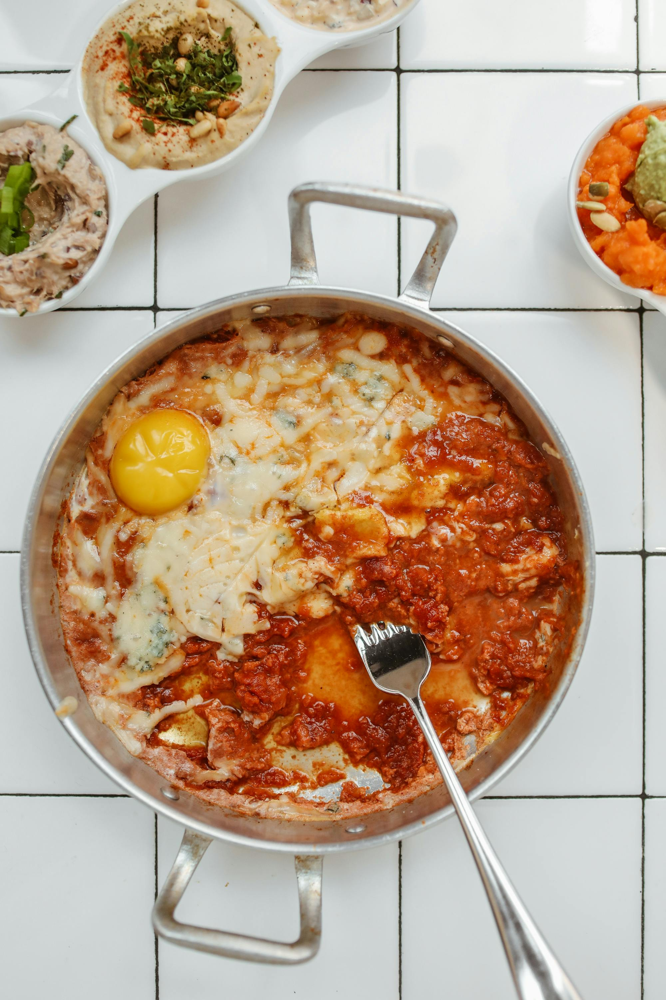
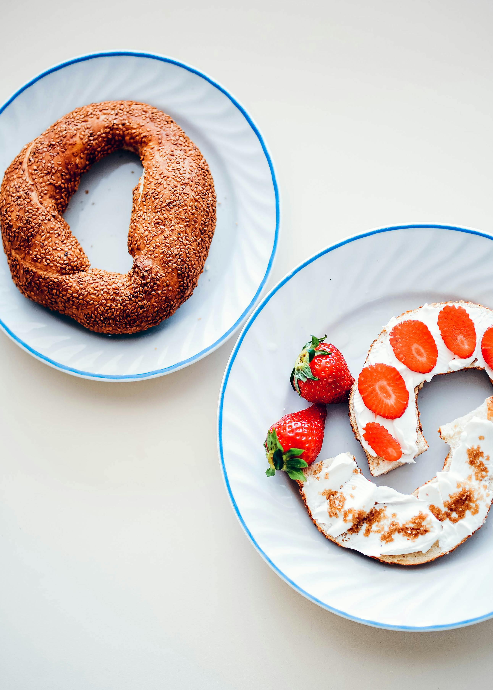
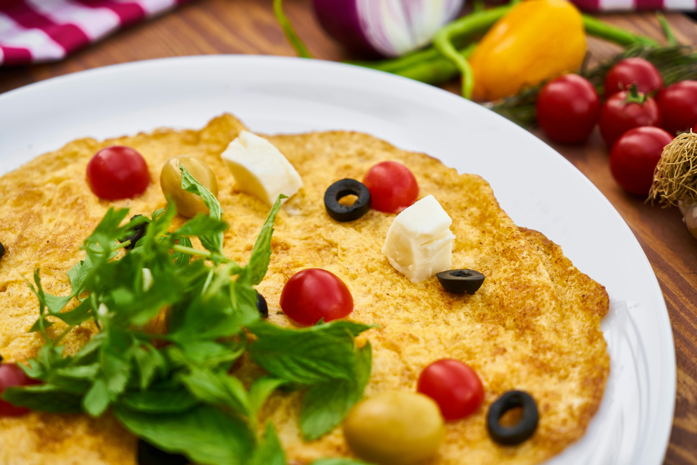
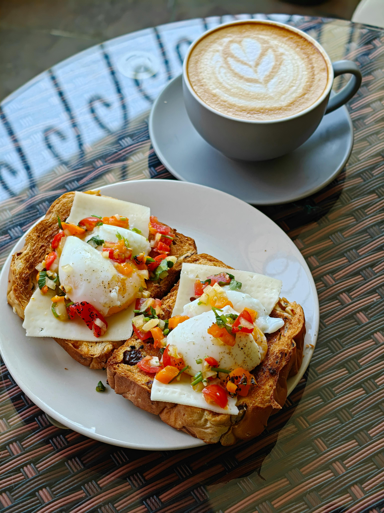
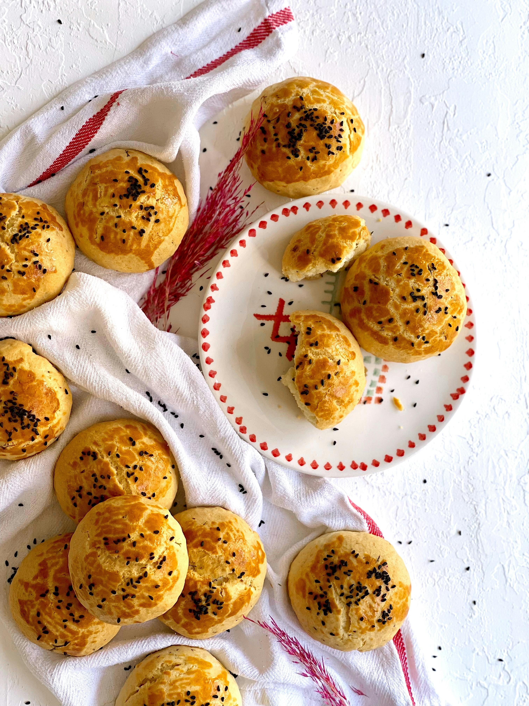
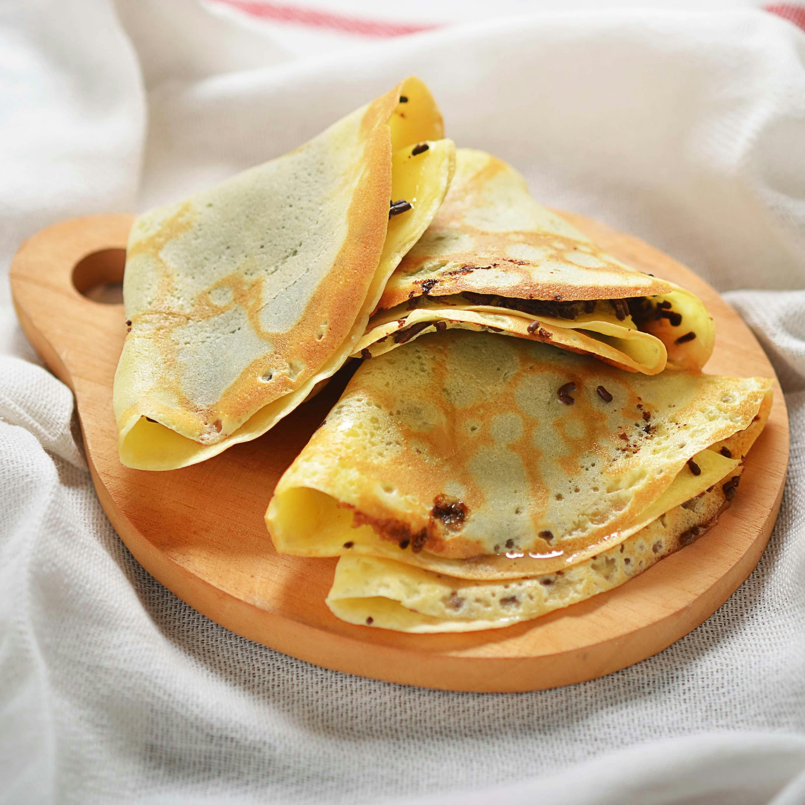

Domates ve biberle yapılan nefis bir kahvaltılık.

İçindeki susamlar ve sıcak fırın kokusuyla simit.

Yumurtalı ve çeşitli malzemelerle zenginleşmiş pratik bir seçenek.

Kaşar peynirli ve çıtır çıtır tost keyfi.

Peynirli ya da patatesli, sıcak poğaça lezzeti.

Tatlı ya da tuzlu, ince krep seçenekleriyle keyifli bir başlangıç.